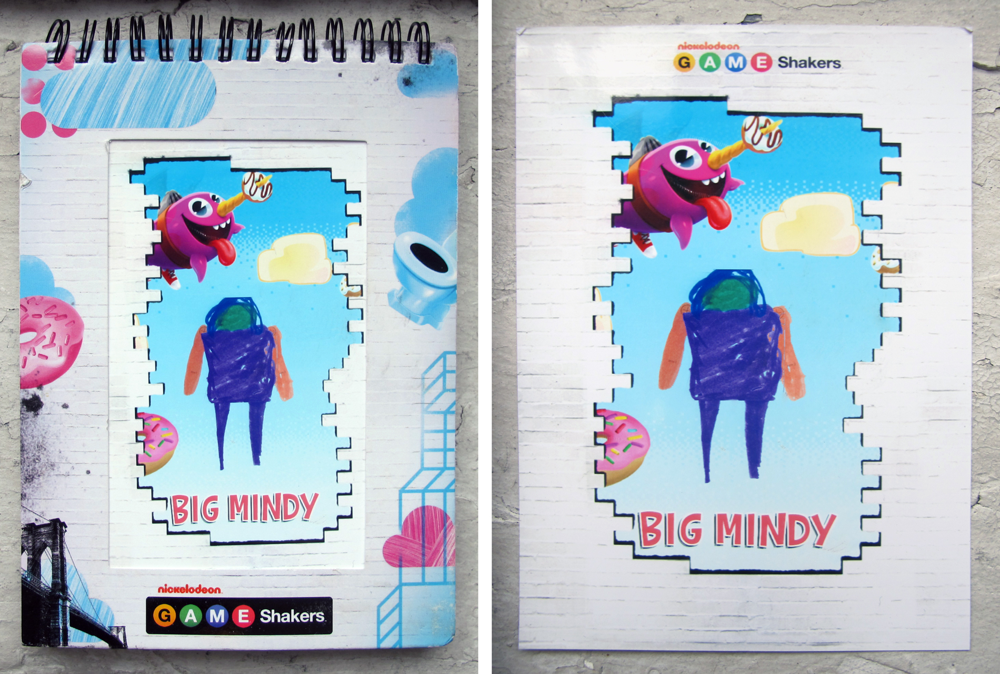

Nickelodeon for Maker Faire
Maker Faire is billed as "the greatest show and tell on earth" and Nickelodeon, the channel destination for youth edutainment, needed a physical/digital experience for their booth marketing a new and popular show about young game-creators and coders titled Game Shakers.
The concept centered around the idea of programming games in which we soon asked ourselves how can we have participants create their own unique game with a custom character and mechanics? We picked apart the process and devised layered stages with which to move participants through the booth fully engaged at each step.
The first step involved a custom worksheet in which participants drew their character or "hero" of the game as sprites to use in animation. They also programmed and created power ups and various physics of the game world their hero would be in.
This worksheet was then inserted into a robot (a set piece from the actual show) and digitized via a tablet. The character and programming elements were then extracted and immediately launched into a timed game the participant played.
After completion, the participants character printed out on a hero card to be framed in a branded notebook as an ultimate experience takeaway. The animated character also appeared as a usable GIF in perpetuity in a branded section on the Giphy website.
The booth itself was a faithful recreation of the actual Nickelodeon show.